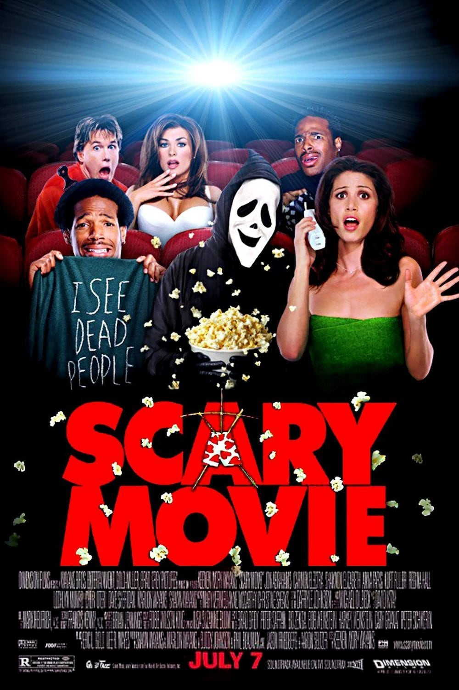
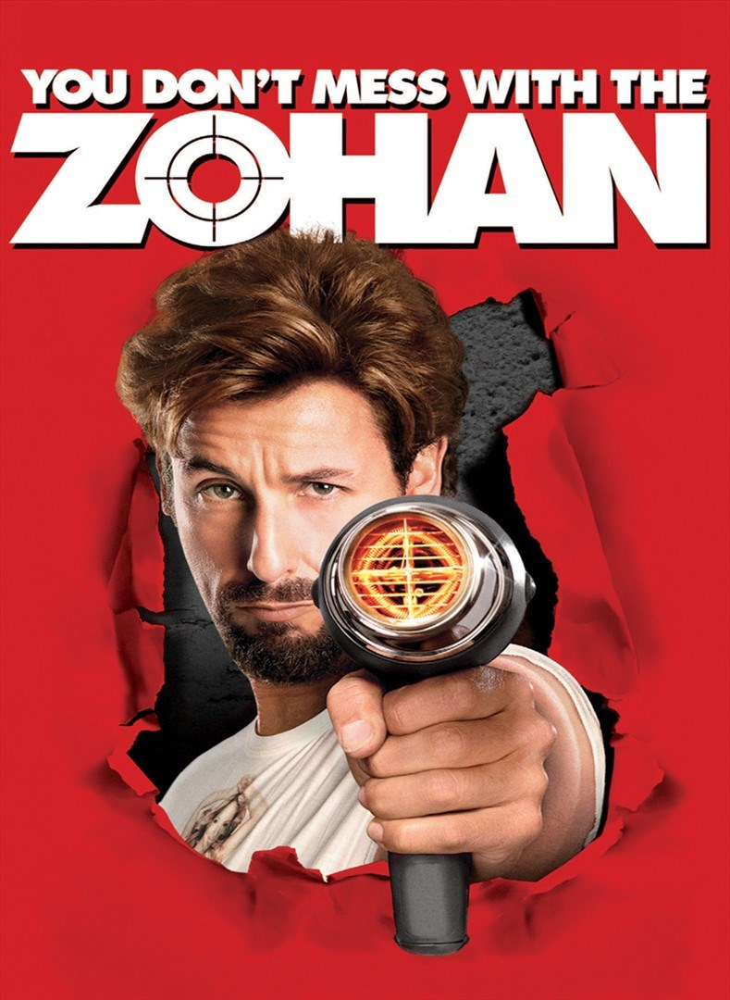

In high school, Schmidt (Jonah Hill) was a dork and Jenko (Channing Tatum) was the popular jock. After graduation, both of them joined the police force and ended up as partners riding bicycles in the city park. Since they are young and look like high school students, they are assigned to an undercover unit to infiltrate a drug ring that is supplying high school students synthetic drugs.

A group of teenagers including Cindy Campbell and Bobby Prinze, accidentally hit a man when driving, and dispose of the body, but now they are being stalked by a very recognisable masked killer. The victim count increases, whilst Cindy must survive the carnage that has she has seen in so many films before.

Handlingen er satt stort sett i Las Vegas, og handler om fire menn på utdrikningslag like før den ene av dem skal gifte seg. Neste morgen finner de ikke den kommende brudgommen, og ingen husker hva som har skjedd i løpet av natten. De har kort tid på seg til å få nøstet opp hendelsesforløpet og finne brudgommen, da bryllupet er kun timer unna.

Zohan tar New York-kvinnene med storm ettersom han byr på mer enn bare en fiks frisyre. Noen terrorister tror at Zohan jobber "undercover" og forsøker å tvinge han til å være med i deres nettverk. Hans gamle agenttakter sitter imidlertid i, så de må tenke seg om to ganger før de "krøller" med Zohan!
The Republic of Wadiya is ruled by an eccentric and oppressive leader named Hafez Aladeen. Aladeen is summoned to New York to a UN assembly to address concerns about his country's nuclear weapons program, but the trip goes awry.
6. Grown Ups (2020)
7. Superbad (2007)
8. Dumb and dumber (1994)
9. The Wolf of Wall Street(2013)
10. Alene hjemme(1990)
11. Yes Man (2008)
12. American Pie (1999)
13. Borat (2006)
14. Monty Pythons Life of Brian (1979)
15. War Dogs (2016)
16. The Girl next door (2004)
17. Shaun of the dead (2004)
18. Project X (2012)
19. The Babysitter (2017)
20. Happy Death Day (2017)